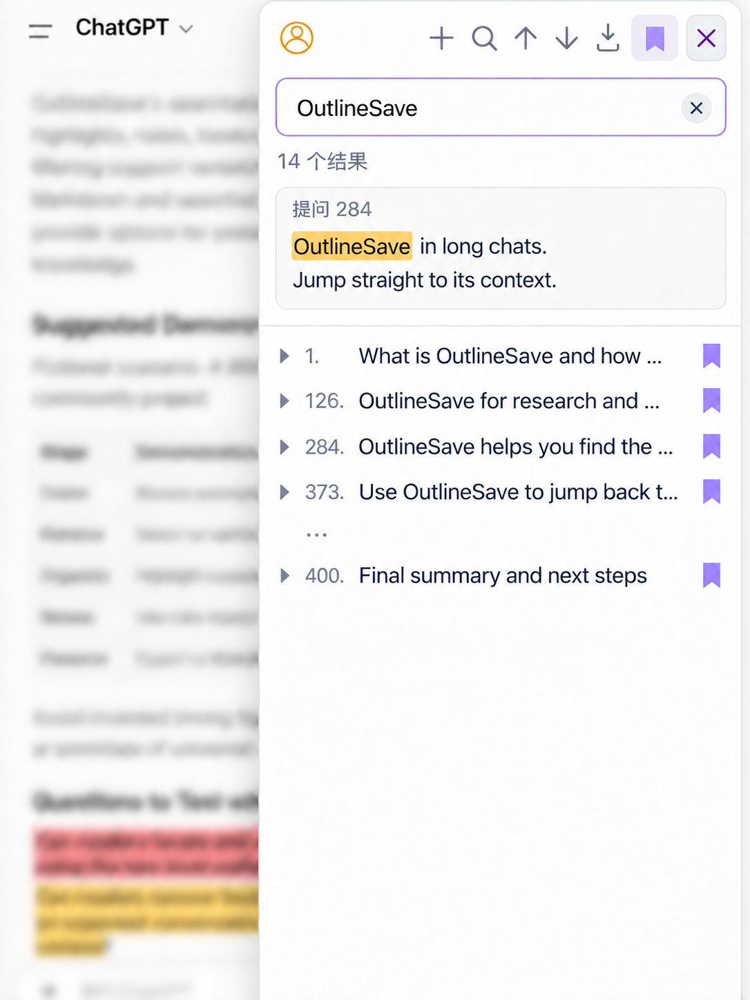
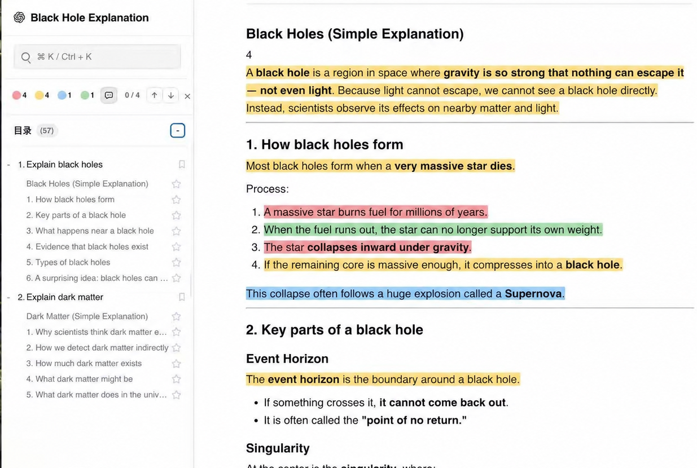

Search the outline
Search main questions and nested headings. Click a match to jump back.

OutlineSave Pro
Search your AI chat outline. Jump to answers. Save as searchable HTML.
Free users get a 7-day Pro trial. No card required.
Search main questions and nested headings. Click a match to jump back.

Keep your outline and highlights in a private HTML file. Read it offline.

AI conversations get long. Useful answers disappear in the middle. Browser history is not a knowledge system.
Bookmark questions and answers, highlight passages in four colors, add notes, then find or export the parts you want to keep.
Use the outline and local search to jump to a question or nested heading. Exported HTML keeps its outline and search, so you can find content offline.
Add level-one bookmarks to user questions and level-two bookmarks to AI answers. Filter bookmarks to show or export selected Q&As. Highlight conversation text in four colors and add notes.
Offline HTML pages preserve the outline, bookmarks, four highlight colors, and notes. Locate content by outline, bookmarks, color, or notes. Run a manual Google backup, or export to Inbox Local for macOS.
Same Pro features. Choose one year or lifetime access.
| Included | Free | Pro |
|---|---|---|
| Directory search | Limited allowance | Unlimited |
| HTML export | 1 / week | Unlimited |
| Updates & support | Core fixes and compatibility updates | Ongoing Pro feature improvements; priority technical support |
For regular AI work review
Valid for 1 year · Manual renewal · No auto-renewal
Get 1-Year ProBest for long-term AI knowledge building
One-time payment · No subscription · No renewal
Get Lifetime AccessOnly $15 more than 1-Year
Secure checkout by Paddle · 14-day refund · No subscription
Free users get a 7-day Pro trial. It starts on the first click of Advanced HTML export in the extension. No card required.
Free includes unlimited outline navigation, basic bookmarks, highlights, and notes, with limited outline search and one advanced HTML export per week. Pro unlocks unlimited outline search and searchable HTML exports, export filters, offline review, and priority support.
Free users start a 7-day Pro trial automatically the first time they click Advanced HTML export in the extension. No card is required, and the trial does not automatically become a paid plan.
Free users get a limited allowance. The exact cap has not been finalized; we will announce it in the extension and on this page. Pro outline search is unlimited.
No. Browsing and clicking the outline has no usage limit. The Free allowance applies to outline search, not ordinary outline navigation.
Yes. Add level-one bookmarks to user questions and level-two bookmarks to AI answers. Filter bookmarks to show or export only the Q&As you want, in Markdown, HTML, or Inbox.
They include the same Pro features. A 1-Year license is valid for one year with manual renewal; Lifetime requires no renewal. Both include unlimited outline search and HTML exports, search and filters in exported pages, preserved highlights, notes, and bookmarks, and priority email support.
A Lifetime License is a one-time purchase with no subscription or automatic renewal. Your license remains valid for future compatible versions of OutlineSave for as long as the product continues to be maintained and offered. You won’t need to purchase another license for compatibility updates.
Lifetime includes everything in 1-Year Pro and all future Pro updates, without renewal reminders. Unlimited searchable HTML exports remain available throughout the lifetime license term.
No. Both Pro plans are one-time payments. The 1-Year plan expires after a year; Lifetime does not require renewal.
Yes. Purchases are covered by a 14-day refund policy. See the refund policy for details.
You receive an activation code by email. Enter it in the extension to activate Pro access.
The payment success page also shows your short activation code when payment is confirmed. Copy it into the extension’s activation field and follow the validation result shown there.
Check the email address used at checkout and your spam folder. Once your code is ready, you can copy it or resend the email from the payment success page. That page shows the resend availability and cooldown. If it is still missing, contact support@wisteriasoftware.uk.
WeChat Pay can complete asynchronously. Please allow about 15 minutes for payment sync and about 20 minutes for the activation email before contacting support.
OutlineSave supports ChatGPT, Claude, DeepSeek, and Gemini, with ChatGPT prioritized for compatibility updates. It works in Chrome and Chromium-based browsers that support Chrome extensions.
No separate OutlineSave account is required. The extension works locally with the content of the current supported AI chat page. If you are not logged in to ChatGPT, its own page display or loading restrictions may affect some extension features.
Yes, if you allow it in Chrome. Open chrome://extensions, select OutlineSave’s Details, and enable “Allow in Incognito”. Chrome disables extensions in Incognito by default.
No. Content from supported AI chat pages is processed locally in your browser and is not uploaded to Wisteria servers.
Because OutlineSave works with the ChatGPT web interface, major interface changes may occasionally cause temporary compatibility issues.
OutlineSave is actively maintained, and I usually address compatibility issues within about two business days. More complex changes may take longer, and the release of an update may also depend on Chrome Web Store review times.
Visit Help & Guides or email support@wisteriasoftware.uk. You can also contact us at info@wisteriasoftware.uk.
Chat content is processed in your browser. Wisteria does not upload or analyze your conversations.
You receive an activation code by email after purchase. Enter it in the extension to unlock Pro.
All purchases are covered by a 14-day refund policy, with support available by email.
Choose the Pro term that fits you.
Support a local-first independent product.